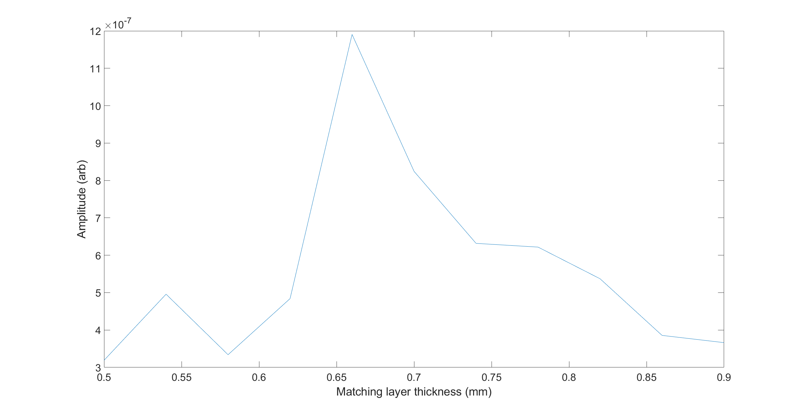
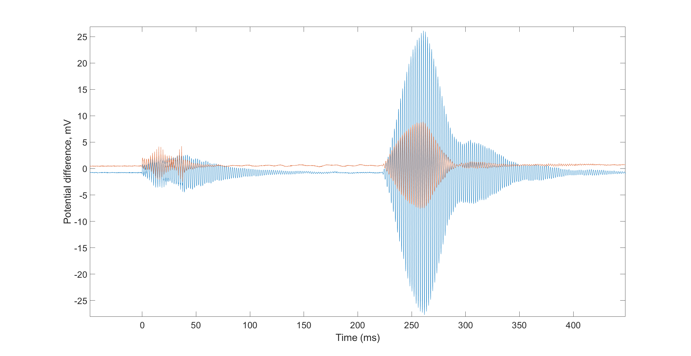

Current ultrasonic transducer (UT) fabrication procedure is time consuming and challenging. A typical fabrication process takes about two weeks and another three weeks to assemble a complete product as all components are manufactured, machined and assembled. When developing a new transducer, this process can go numerous iterations until the required parameters are achieved. Intsonic aims to offer a strong knowledge base and continuous innovation
We are adapting advanced manufacturing methods from other areas of manufacturing to UT production, and are using rapid prototyping to drive our innovation. This way, we decrease the development time and cost, allowing us to target a specific area of application, instead trying to create a "universal transducer".
Small vatiations in parameters can cause drastic changes in performance, for example matching layer thickness. Finite element modelling is of the best methods to predict transducer performance and is generally better than using analytical models. Using FEM allows us to save time and materials, hence reducing costs, as well as achieving better results in terms of performace.
Depending on the application, transducer needs to meet certain reuqirements and have certain properties. They include resonant frequency, sensitivity, bandwidth and operating temperature range of the transducers. Given the parameters that need to be achieved, different materials and techniques need to be used in the assembly. For example, two waveforms for our air-coupled transducers can be seen below. In blue is the undamped transducer, the red is the damped one. It can be seen that damping reduces the transducer ringdown, both post-crosstalk and after the ultrasonic signal has been recieved. The bandwidth also increases with damping. However, this happens at the cost of sensitivity, which can be clearly seen.
